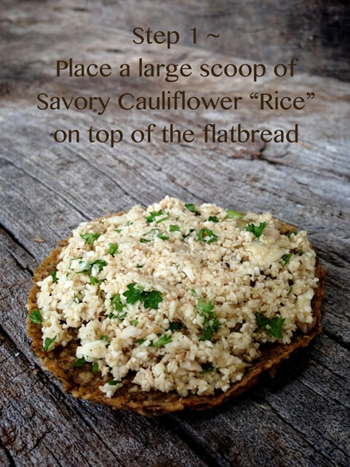
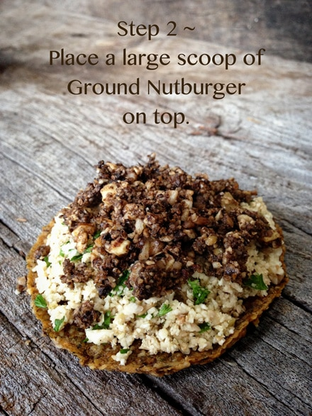
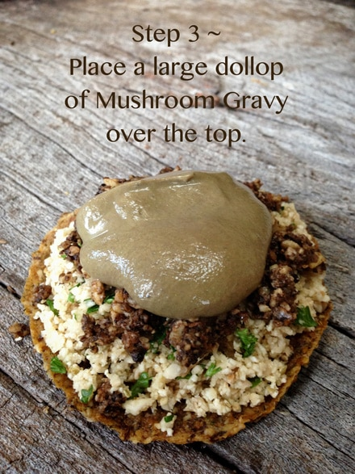
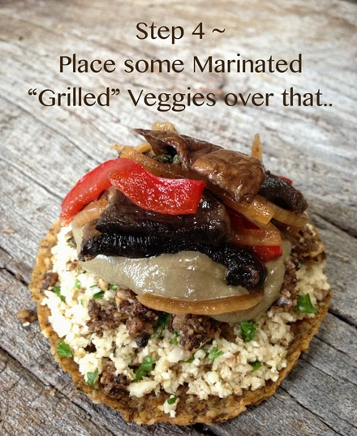
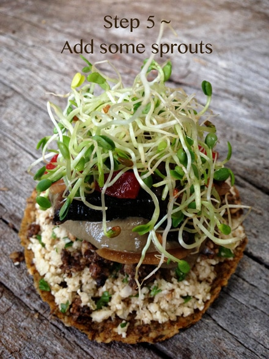
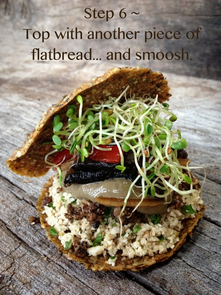

Bob’s Raw Gypsy Burger
Here we go with another recipe mashup, using up some of those leftovers. Using the name gypsy for this “recipe” may seem a bit odd to describe it, but that was the very first thing that came to mind when I first saw it on a plate. We moved a lot when I was growing up… well fiddle; I moved a lot my whole life… Whenever someone asked why I would just say that ” my mom had gypsy in her blood.” How does this correlate with this recipe? I guess when I looked at my creation, it just reminded me of being all over the place. :) If that doesn’t make sense, welcome to my brain. haha
We were quite happy with this recipe with all the different textures and flavors. I hope you too enjoy it. Have a great time in the kitchen. :)
Recipe mashup:






© AmieSue.com